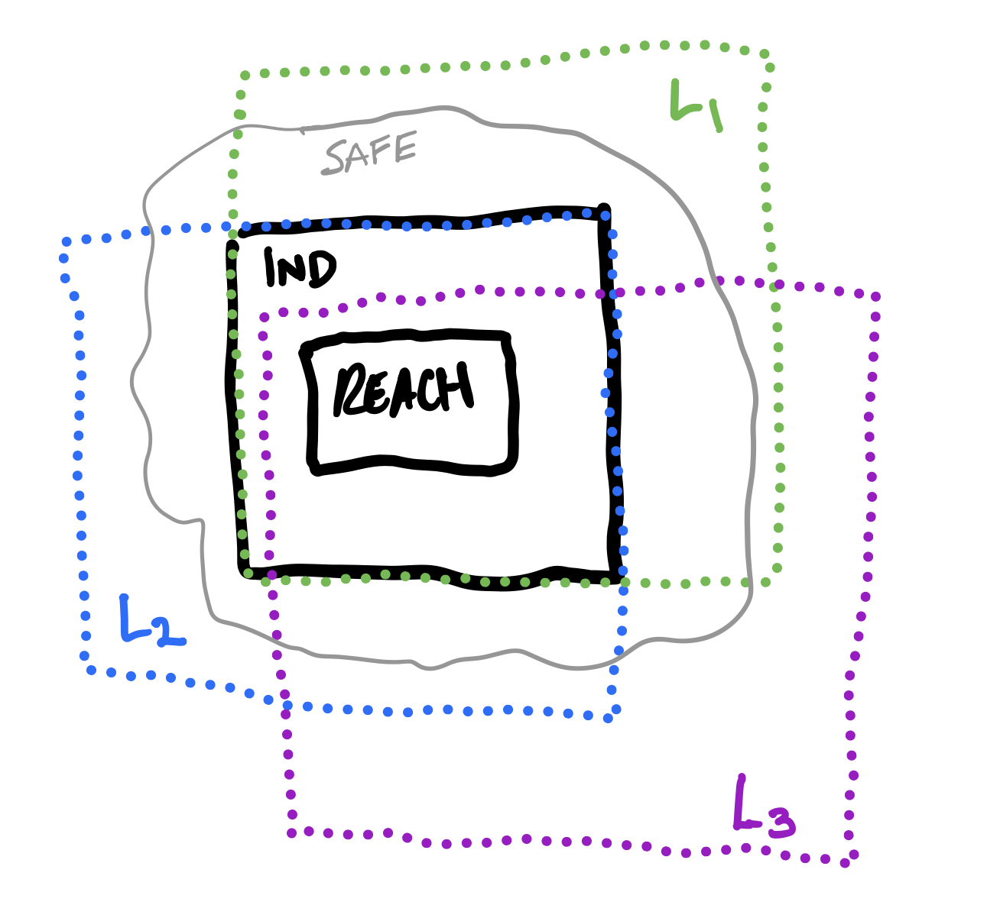

For the safety verification of transition systems, we typically must perform some kind of abstraction. For finite transition systems, verification is theoretically decidable, but practically it suffers from the state space explosion problem, and so exhaustive verification may be hard (e.g. exponential) in general. So, for verifying any systems of non-trivial size, abstraction is typically necessary. Finding an inductive invariant to prove safety is, essentially, about finding a suitable abstraction that overapproximates the set of reachable system states. Furthermore, we presumably want this abstraction to be “concise" i.e. it doesn’t scale in proportion to the size of the transition system (e.g. the number of states).
In general, in order to discover a “concise" inductive invariant we must work over some abstraction domain. Given a state space \(S\), we can define an abstraction domain \(D \subseteq 2^S\) as simply a set of subsets of \(S\). For example, given the state space defined by a single real valued variable \(x \in \mathbb{R}\), a possible abstraction domain is \[\begin{aligned} D_1 = \{x > 2, x < - 2\}\end{aligned}\] where each element of \(D_1\) is a subset of \(\mathbb{R}\), defined as a symbolic predicate over \(x\).
One way to define an abstraction domain for a state space \(S\) is to explicitly define the set \(D \subseteq 2^S\). Alternatively, we can provide a set of atomic predicates and rules for for how these predicates can be combined to form additional predicates. Our abstraction domain is then defined as the space of all possible composite predicates that can be formed as combinations of atomic predicates, perhaps up to some bounded size. We can call this the grammar-based approach.
For example, for a state space \(S\) we can define a grammar \(G\) as a pair \((P,O)\) where \(P \subseteq 2^S\) is a set of predicates on \(S\), and \(O\) is a set of operators for combining elements of \(P\) to form new predicates on \(S\). These operators may be unary, binary, etc. For example, we may have a grammar \(G_1 = (\{x>2, x < 3\}, \{\neg, \vee\})\). In symbolic terms, the set \(O\) could be composed of logical operators, but in general we can view \(O\) as any set-based operators i.e. operators that take in some set of predicates of \(P\) and produce new predicates in \(2^S\).
For transition systems with a state space \(S\), we can also always work over a “trivial” abstraction domain. That is, the domain \(D_{\bot} = \{\{s\} \mid s \in S\}\) that consists of all “singleton" predicates i.e. those that contain a single concrete state. We can view this domain as “minimally abstract”, since the predicates don’t cover multiple states, and so don’t really perform any “true" abstraction.
If we are given a transition system \(M\) with reachable states \(Reach\) and we want to prove that some invariant \(Safe\) holds on \(M\), we must find an inductive invariant sufficient to establish \(Safe\). Typically, we search for an inductive invariant by iteratively strengthening \(Safe\), by conjoining a series of lemmas invariants: \[\begin{aligned} &\wedge Safe \\ &\wedge L_1 \\ &\phantom{\wedge}\vdots \\ &\wedge L_n\end{aligned}\]
One question, then, is how do we find suitable lemma invariants? One approach is to simply define an abstraction domain \(D\) that consists of some large set of candidate invariants, and try to form an inductive invariant as the conjunction of these invariants. In practice, we may define \(D\) using a grammar, but ultimately we are concerned with whether the abstraction domain generated by such a grammar is sufficient for learning an inductive invariant.
Following this approach to defining our abstraction domain, we now need a strategy for how to form an inductive invariant from the predicates in \(D\) (which are simply “plain” invariants of our system \(M\)). We also want to consider whether this strategy is guaranteed to converge to an inductive invariant, if one exists. By definition, we know that \(Reach\) is always a valid inductive invariant, but for sake of a simple illustration, let’s also assume that there also exists one additional inductive invariant of our system, \(Ind\) that is a strict superset of \(Reach\) e.g. consider the following example:

There are 3 invariants in our abstraction domain, \(D=\{L_1, L_2, L_3\}\), and two valid inductive invariants, \(Reach\) and \(Ind\). If our strategy is to just select invariants from \(D\) in some arbitrary order, are we guaranteed to converge to some inductive invariant? If we select \(L_1\) and then \(L_2\), then we will converge to \(Ind\). But, if we select \(L_1\) and then \(L_3\), we will end up with a resulting predicate \(L_1 \wedge L_3\) that “overshoots" (i.e. is stronger than) \(Ind\), and we end up stuck, since there are no inductive invariants stronger than \(Ind\) that are expressible in our abstraction domain. So, if we follow a strategy of strict refinement (always combining via conjunction), then we are inevitably stuck in this case. We could potentially undo a past choice, however, and try a different invariant selection strategy, in the style of a standard backtracking search. But, a question is how to detect when we end up in this "dead end" refinement scenario.
Note that, at least in its initial versions, my understanding is that algorithms like IC3 were complete in the above sense (i.e. could always converge to an inductive invariant) because they essentially have the ability to always refine their abstraction to an arbitrarily fine-grained level i.e. they can just explicitly eliminate concrete states one by one (in the finite state case). This doesn’t really solve the problem, it just kind of works around it by degrading to explicit state enumeration if you can’t converge to a “concise" abstraction. When using the approach described above (i.e. our FMCAD approach), we fix the abstraction domain and if it is too coarse we don’t adjust it dynamically. IC3 originally worked in a somewhat differnet manner i.e. look at concrete counterexamples and then abstract based on them. I think they initially did this abstraction based on a “ternary simulation” approach i.e. given a concrete boolean state \[\begin{aligned} &\wedge x = 0 \\ &\wedge y = 0 \\ &\wedge z = 0\end{aligned}\] look at all possible \(2^3\) abstractions of this state that can be formed by dropping some subset of literals.
If you start off with a fixed abstraction domain, is there a way to dynamically adjust the domain if you realize that it cannot express the concepts (e.g. inductive invariants) you want to express? Is this basically similar to what CEGAR, abstraction refinement does? Also “widening”/“narrowing” in abstract interpretation?
If, in practical cases there are many inductive invariants in between the strongest and the weakest, does this make it much more unlikely that you will “overshoot” all of them and end up in a dead end? Even with a naive lemma selection approach, is it somehow quite likely you will converge on one of these inductive invariants?